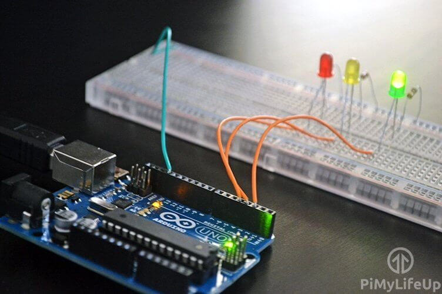

- Arduino
- 3 светодиода
- 3 резистора на 100 Ом
- 3 провода для подключения
- Доска для подключения
- // variables
- int GREEN = 2;
- int YELLOW = 3;
- int RED = 4;
- int DELAY_GREEN = 5000;
- int DELAY_YELLOW = 2000;
- int DELAY_RED = 5000;
- // basic functions
- void setup()
- {
- pinMode(GREEN, OUTPUT);
- pinMode(YELLOW, OUTPUT);
- pinMode(RED, OUTPUT);
- }
- void loop()
- {
- green_light();
- delay(DELAY_GREEN);
- yellow_light();
- delay(DELAY_YELLOW);
- red_light();
- delay(DELAY_RED);
- }
- void green_light()
- {
- digitalWrite(GREEN, HIGH);
- digitalWrite(YELLOW, LOW);
- digitalWrite(RED, LOW);
- }
- void yellow_light()
- {
- digitalWrite(GREEN, LOW);
- digitalWrite(YELLOW, HIGH);
- digitalWrite(RED, LOW);
- }
- void red_light()
- {
- digitalWrite(GREEN, LOW);
- digitalWrite(YELLOW, LOW);
- digitalWrite(RED, HIGH);
- }
- Загорается зеленый светодиод (задержка 5000 мс)
- Загорается желтый светодиод (задержка 2000 мс)
- Загорается красный светодиод (задержка 5000 мс)
Arduino Traffic Lights
-

Состав устройства:
Код подключения к модулю